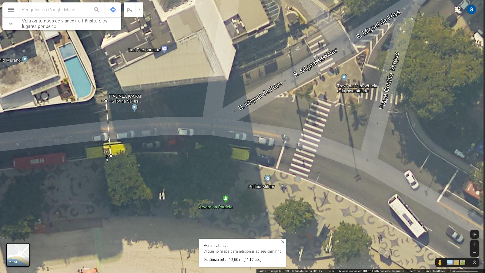
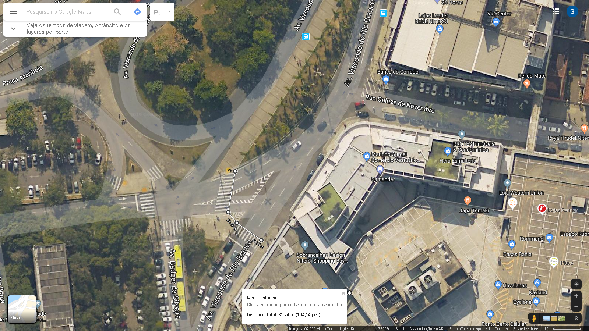
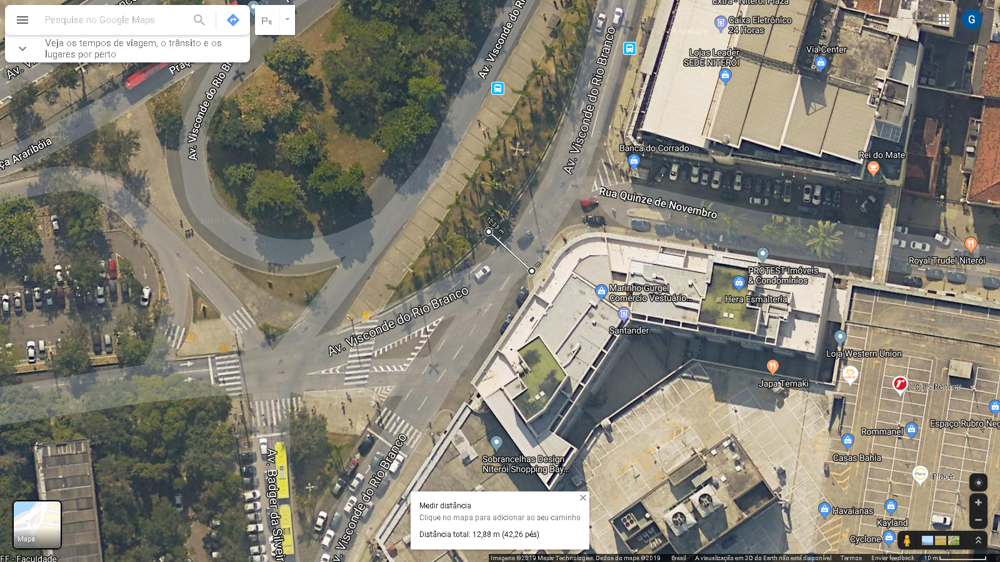

Proposta A
Travessia única, localizada fora do trevo, medindo 12.50m
Cenário B
Entrada do Plaza Shopping: No presente cenário, são necessárias duas travessias para se chegar ao shopping (totalizando 31.7m)
Localização
Proposta B
Travessia única, medindo 12.8m
